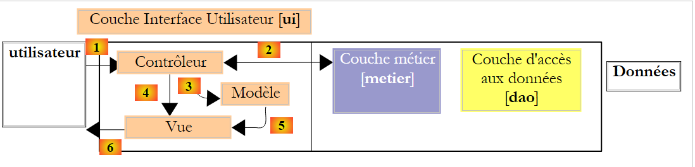

4. Ontwikkeling MVC (Model – View – Controller)
Een webapplicatie heeft vaak een drielagige architectuur:

- de laag [dao] zorgt voor de toegang tot de gegevens, meestal persistente gegevens binnen een SGBD. Maar het kunnen ook gegevens zijn die afkomstig zijn van sensoren, het netwerk, ...
- De laag [metier] implementeert de ‘bedrijfsspecifieke’ algoritmen van de applicatie. Deze laag is onafhankelijk van elke vorm van gebruikersinterface. Ze moet dus zowel bruikbaar zijn met een console-interface, een webinterface als een rijke clientinterface. Ze moet dus buiten de webinterface om getest kunnen worden, en met name met een console-interface. Dit is doorgaans de meest stabiele laag van de architectuur. Ze verandert niet als de gebruikersinterface of de manier waarop toegang wordt verkregen tot de gegevens die nodig zijn voor de werking van de applicatie, wordt gewijzigd.
- de laag [interface utilisateur], de (vaak grafische) interface waarmee de gebruiker de applicatie kan bedienen en informatie van de applicatie kan ontvangen.
De communicatie verloopt van links naar rechts:
- de gebruiker doet een verzoek aan de laag [interface utilisateur]
- dit verzoek wordt door de laag [interface utilisateur] opgemaakt en doorgestuurd naar de laag [métier]
- als de laag [métier] gegevens nodig heeft om dit verzoek te verwerken, vraagt deze die op bij de laag [dao]
- Elke aangevraagde laag stuurt haar antwoord door naar de laag links ervan, totdat het uiteindelijke antwoord bij de gebruiker terechtkomt.
De lagen [métier] en [dao] worden normaal gesproken via Java-interfaces gebruikt. Daardoor kent de laag [métier] van de laag [dao] alleen de interface(s) en niet de klassen die deze implementeren. Dit zorgt ervoor dat de lagen onderling onafhankelijk zijn: het wijzigen van de implementatie van de laag [dao] heeft geen invloed op de laag [métier], zolang de definitie van de interface van de laag [dao] niet wordt gewijzigd. Hetzelfde geldt voor de lagen [interface utilisateur] en [métier].
De architectuur MVC (Model – View – Controller) bevindt zich in de laag [interface utilisateur] wanneer deze een webinterface is:

De verwerking van een verzoek van een klant verloopt volgens de volgende stappen:
- de klant doet een verzoek aan de controller. Deze verwerkt alle verzoeken van klanten. Dit is de toegangspoort tot de applicatie. Dit is de C van MVC.
- de controller C verwerkt dit verzoek. Hiervoor kan hij de hulp van de businesslaag nodig hebben. Zodra het verzoek van de klant is verwerkt, kan dit verschillende reacties oproepen. Een klassiek voorbeeld is:
- een foutpagina als het verzoek niet correct kon worden verwerkt
- een bevestigingspagina in het andere geval
- de controller kiest de reactie (= weergave) die naar de klant moet worden verzonden. Het kiezen van de reactie die naar de klant moet worden verzonden, vereist verschillende stappen:
- het object kiezen dat de reactie zal genereren. Dit wordt de weergave V genoemd, de V van MVC. Deze keuze hangt doorgaans af van het resultaat van de uitvoering van de door de gebruiker gevraagde actie.
- de view voorzien van de gegevens die deze nodig heeft om dit antwoord te genereren. Dit antwoord bevat namelijk meestal informatie die door de controller is berekend. Deze informatie vormt wat men het model M van de view noemt, de M van MVC.
- Stap 3 bestaat dus uit het kiezen van een weergave V en het opbouwen van het daarvoor benodigde model M.
- De controller C vraagt de gekozen weergave om zichzelf weer te geven. Meestal gaat het erom een specifieke methode van de weergave V uit te voeren die verantwoordelijk is voor het genereren van het antwoord aan de klant. In dit document zullen we zowel het object dat het antwoord aan de klant genereert als dat antwoord zelf ‘weergave’ noemen. De literatuur MVC is op dit punt niet expliciet. Als het antwoord ‘weergave’ zou moeten heten, zouden we het object dat dit antwoord genereert ‘weergavegenerator’ kunnen noemen.
- De weergavegenerator V gebruikt het door de controller C voorbereide model M om de dynamische delen van het antwoord te initialiseren dat hij naar de klant moet verzenden.
- Het antwoord wordt naar de client verzonden. De exacte vorm hiervan hangt af van de viewgenerator. Dit kan een stream HTML, PDF, Excel, ... zijn.
De MVC-methodologie voor webontwikkeling vereist niet noodzakelijkerwijs externe tools. Zo kan men een Java-webapplicatie met een MVC-architectuur ontwikkelen met een eenvoudige JDK en de basisbibliotheken voor webontwikkeling. Een methode die voor eenvoudige applicaties kan worden gebruikt, is de volgende:
- de controller wordt verzorgd door één enkele servlet. Dit is de C van MVC.
- Alle verzoeken van de client bevatten een action-attribuut, bijvoorbeeld (http://.../appli?action=liste).
- Afhankelijk van de waarde van het attribuut ‘action’ laat de servlet een interne methode van het type [doAction(...)] uitvoeren.
- De methode [doAction] voert de door de gebruiker gevraagde actie uit. Hiervoor maakt ze, indien nodig, gebruik van de laag [métier].
- Afhankelijk van het resultaat van de uitvoering bepaalt de methode [doAction] welke pagina JSP moet worden weergegeven. Dit is de weergave V van het model MVC.
- De pagina JSP bevat dynamische elementen die door de servlet moeten worden geleverd. De methode [doAction] levert deze elementen. Dit is het model van de weergave, de M van MVC. Dit model wordt meestal in de verzoekcontext geplaatst (request.setAttribute("sleutel", "waarde"), of, minder vaak, in de sessie- of applicatiecontext. Een pagina JSP heeft toegang tot deze drie contexten.
- De methode [doAction] zorgt ervoor dat de weergave wordt getoond door de uitvoeringsstroom door te geven aan de gekozen pagina JSP. Hiervoor gebruikt ze een instructie van het type [getServletContext() .getRequestDispatcher(" pageJSP ").forward(request, response)].
Dit architectuurpatroon (Design Pattern) MVC wordt het „Front Controller“-patroon of het patroon met één controller genoemd. Eén enkele servlet verwerkt alle verzoeken van alle gebruikers.
Laten we terugkeren naar de architectuur van de vorige webapplicatie:

Deze architectuur komt overeen met de volgende n-tier-architectuur:

Er is in feite slechts één laag, namelijk die van de webinterface. Over het algemeen zal een webapplicatie MVC op basis van servlets en pagina’s JSP de volgende architectuur hebben:

Voor eenvoudige applicaties is deze architectuur voldoende. Wanneer men meerdere van dit soort applicaties heeft geschreven, merkt men dat de servlets van twee verschillende applicaties:
- hetzelfde mechanisme gebruiken om te bepalen welke methode [doAction] moet worden uitgevoerd om de door de gebruiker gevraagde actie te verwerken
- verschillen in feite alleen in de inhoud van deze methoden [doAction]
De verleiding is dan groot om:
- de verwerking (1) onder te brengen in een generieke servlet die niets weet van de applicatie die er gebruik van maakt
- de verwerking (2) te delegeren aan externe klassen, aangezien de generieke servlet niet weet in welke applicatie deze wordt gebruikt
- de koppeling te leggen tussen de door de gebruiker gevraagde actie en de klasse die deze moet verwerken met behulp van een configuratiebestand
Er zijn hulpmiddelen, vaak „frameworks“ genoemd, in het leven geroepen om ontwikkelaars de bovengenoemde mogelijkheden te bieden. De oudste en waarschijnlijk bekendste daarvan is Struts (http://struts.apache.org/). Jakarta Struts is een project van de Apache Software Foundation (www.apache.org). Dit framework wordt beschreven in (http://tahe.developpez.com/java/struts/).
Het recenter verschenen Spring-framework (http://www.springframework.org/) biedt vergelijkbare mogelijkheden als Struts. Het gebruik ervan is in verschillende artikelen beschreven (http://tahe.developpez.com/java/springmvc-part1/).
We presenteren nu een voorbeeld van een MVC-architectuur op basis van servlets en JSP-pagina’s.